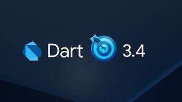

Diferencias entre Dart y otros lenguajes de programación
La principal diferencia que presenta Google Dart frente a otros lenguajes de programación es que es más fácil de leer ya que la sintaxis de este se acerca al lenguaje humano, tiene más posibilidades y menos comandos.
Es posible utilizar caracteres en blanco, pestañas y saltos de línea a discreción, lo que permite a los programadores de estructurar bien el código, de manera que sea últimamente ignorado por el compilador. Sin embrago, hay unas cuantas excepciones, como las palabras clave y los nombres de variables y funciones, es decir, todas las definiciones establecidas dentro del lenguaje Dart. Entre ellas se encuentran, por ejemplo, “if“, “else“, “string“ o “void“.
Por último, se diferencia entre mayúsculas y minúsculas, lo que deja espacio a las denominaciones.
